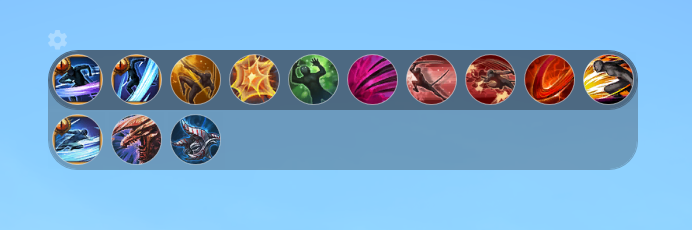

Mods
Mods
Il est très simple d'installation, il vous suffit juste de le télécharger à ce lien Tera Custom Cooldown "TCC". Après avoir téléchargé la dernière version affichée il vous suffira d'extraire le dossier TCC sur votre bureau.
Après il vous faudra les Mods qui vont " supprimer " l'interface du jeu de base pour que vous n'ayez pas tout en double, disponible à ce lien Mod pour " supprimer " l'interface de Tera. Après avoir télécharger ce paque de mods vous devrais les placer dans vôtre jeu à cette endrois
" TERA\Client\S1Game\CookedPC\Art_Data\Packages\_S1UI "
si vous n'avais pas le dossier _S1UI il faudras le créer et placer tout les fichier .gpk dans ce dossier
Et voilà l'installation terminer.
Là je vais vous montrer en image toute les configurations et vous les expliquer au mieux. ci-dessous
Ceci sera nôtre point de départ ou nous allons retrouver
"Enable" qui veux dire "Activer"
"Visibility" qui veux dire "Visible"
"Show always" qui veux dire "Montrer tout le temps"
"Allow offscreen" qui veux dire "Autoriser en dehors de l'écran"
"Click through mode" qui veux dire "Cliquez au travers" ( plusieur option disponible )
"Scale" qui veux dire "Taille"
"Auto Dim" qui veux dire "Transparence automatique"
"Dim opacity" qui veux dire "Opaciter de la tramsparence"
Pour le "Click through mode" vous aurais 5 option différentes qui sont ci-dessous, le "Click through mode" sert à savoir quand est ce que vous pourrais toucher à l'interface TCC en jeu pour pouvoir la modifier ou la déplacer
"Never" pour jamais
"Always" pour toujours
"When dim" pour le Hors combat
"when un dim" pour le En combat
"Game Driven" qui est le mode automatique( mais requière le chat2.gpk et le proxy avec TCC-Stub pour fonctonner)
Cooldown window settings
2 option simple
"Cooldown bar mode" se qui fait que vous pourrais modifier ou non vôtre barre de sort

"Show item cooldown" qui vous montre tout simplement vos item on cd comme l'es étoiles les dragon 1.5/2.0 ect ect tout se que Tera montre ou pas mais qui à du cd le TCC vous l'affiche
Boss window settings
"Hides adds" qui vous permet d'afficher que la barre de vie du boss ou d'afficher celle des petites mob qu'il pourrais invoquer
"Enrage lable mode" c'est le % restant avant l'enrage du boss ou du suivant on fonction de se que vous choisirais entre "Next (Prochai)" ou "Remaining (Restant)"
"Accurate HP detection" Permet de mieux detecter la vie du boss quand elle bouge rapidement et cette option est activer elle peux demander un peux plus de cpu
Class window settings
Bon bah là c'est juste pour savoir si vous voulais vôtre barre de vie normal donc pv et mana du même côter ou pas
Buff window settings
De même c'est pour savoir si vous voulait voir vos buff / debuff de gauche à droite ou l'inverse
Class windows settings
Celon vôtre class vous arais des sort principaux different qui vous seront mis dans une petite bar bien distincte des autres, là pour le warrior sa me propose de m'afficher mes stacks, donc oui sa me demande sije la veux en bar ou en arrow sa qui change juste la forme barre étant horizontal et Arrow étant vértical et le Show traves cut indicator c'est juste pour m'afficher mes 13 stacks c'est tout.
Group windows settings
"Hide me" se cacher soit même dans le groupe
"Hide duff / Debuff" pour cacher vous buff / debuff ( les non important )
"Disable all buffs and debuffs" là c'est pour vraiment tout désactiver pour vous et pour tout les autres joueurs avec vous
"Show only aggro debuff in HH" Montre uniquement le debuff d'aggro pour la P2 de Vergos"
"Disable HP / MP" Cacher les barre de vie ou de mana des autres joueurs de vôtre groupe/raid
"Raid thershold" Nombre de joueur à afficher par colonne dans l'affichage de groupe
"Show group members laurels" Afficher les laurier d'exploit du groupe
"Show group info" Affiche le nombre de joueur dans le groupe/raid et vous indique aussi le nombre encore en vie #MursDeFlammeDeVergos
"Show awaken icon" Très petit à voir il se trouve sur la droite du logo de class et vous indique si le joueur est éveiller ou non
Open buff setting, vous affiche TOUT ls buff / debuff du jeu vous n'aurais qu'à choisirs ceux que vous voulais afficher ou pas
Chat window settings
"Max messages" le nombre maxde message que le TCC va sauvegarder pour vous ( plus le nombre est haut plus le TCC auras du lag ou des problème )
"Sapm thershold" Compare les messages entre le précedent et le suivant pour savoir si ce sont les mêm ou non, si ce sont les même il bloquera les message noter comme "Spam"
"Chat background opacity" Opaciter du chat
"Font size" Taille de l'écriture dans le chat
"Show timestamps" Afficher l'heure des messages
"Show channel label" Affiche le " Type " de message, genre group, LFG, Guild, ect
"Fade out" Ajoute uin effet de fondu sur le chat pour le faire disparaitre ( cause de gros lag voir crash du TCC )
"Animate chat messages" Affiche une petite animation quand un message arrive ou non
Civil unreset winsows settings
Affiche les pv des tours et des joueurs, j'en sais pas plus j'y vais jamais
Misc settings
"Hight priority" évalue la prioriter sur le cpu
"Force software rendering" utiliser le rendu logiciel si activer ou là carte graphique si désactiver
"Use Hotkeys" Utiliser les raccourcis clavier pour le TCC comme ctrl+Y pour afficher le " Y "
"Hide handeles" aucune idée
---------------------------------------------------------
"Use LFG windows" Utiliser le "Y" du TCC
"Show trade LFG" Affiche les Vente " WTB/WTS " en rouge
---------------------------------------------------------
"Show flight gauge" Affiche la barre de vol pour les montue volante et les stacks de mission de gardien
"Flight gauga rotation" La rotation de la barre
"Flip gauge rotation" pour la retourner
---------------------------------------------------------
"Show always floating button" je sais pas encore
Si le TCC ne fonctionne pas cela peut être dû à 2 choses
1 .Soit votre windows n'est pas à jour
2 .Soit il vous manque Npcap petit utilitaire qui aide le TCC à "mieux" lire les donnés du jeu
3 .Au besoin faite un tour sur ce site Installation de TCC cela pourras vous aidez à mieux comprendre comment l'installer au complet